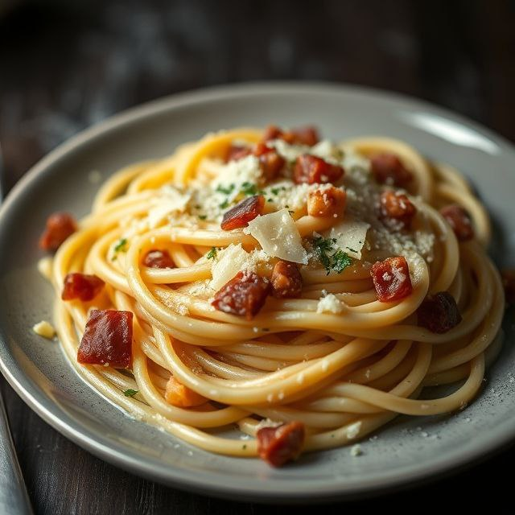

Pâtes à la Carbonara - Plat Traditionnel Italien
Ingrédients :
- 400 g de spaghetti
- 150 g de poitrine fumée (guanciale ou pancetta)
- 3 jaunes d'œufs
- 50 g de pecorino râpé
- 1 cuillère à café de poivre noir fraîchement moulu
- Sel au goût
Instructions :
- Faire cuire les spaghetti dans une grande quantité d’eau salée jusqu’à ce qu’ils soient al dente.
- Dans une poêle, faire revenir la poitrine fumée coupée en morceaux jusqu'à ce qu'elle soit dorée et croustillante.
- Battre les jaunes d'œufs avec le pecorino râpé et le poivre.
- Égoutter les pâtes en conservant un peu d’eau de cuisson.
- Mélanger les pâtes chaudes avec la poitrine fumée, puis ajouter la préparation aux œufs en remuant rapidement.
- Ajouter un peu d’eau de cuisson pour obtenir une sauce crémeuse.
- Servir immédiatement avec du pecorino râpé et du poivre fraîchement moulu.